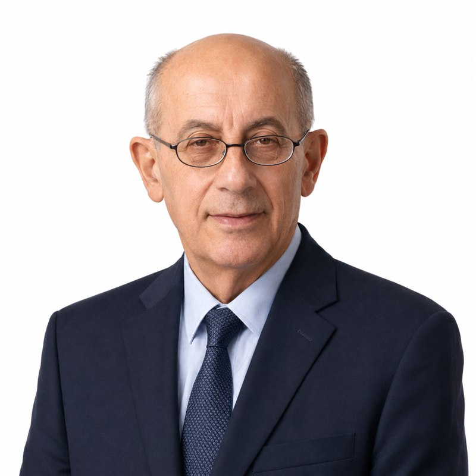

About Dr. Moris Topaz
Surgeon, scientist, inventor and educator: the story of one of Israel's most experienced and respected plastic surgeons.

Four decades of medical excellence
Dr. Moris Topaz is an expert in plastic, aesthetic and reconstructive surgery who uniquely combines a rich clinical career with groundbreaking scientific research. He holds an M.D. from Ben-Gurion University, a B.Sc. in Chemistry, a Master's degree Cum Laude from Tel-Aviv University and a Ph.D. in science from Ben-Gurion University.
He trained in plastic surgery at the Chaim Sheba Medical Center (Tel Hashomer) and is certified in general and plastic surgery by the Sackler Faculty of Medicine, Tel-Aviv University. In 1990 he was a Fellow in Plastic and Reconstructive Surgery at the Eastern Virginia Graduate School of Medicine in the United States.
For 26 years, beginning in 1991, Dr. Topaz headed the Plastic Surgery Unit at the Hillel Yaffe Medical Center in Hadera, performing thousands of reconstructive and aesthetic operations. Today he continues to operate as a senior volunteer surgeon at Ichilov, Kaplan, Meir, Schneider and other hospitals, alongside his private clinic in Ra'anana and surgical work at Herzliya Medical Center and Assuta.
Professional leadership on the international stage
IBIR
Founder and Chairperson of the International Breast Implant Registry, a global patient-safety initiative.
IQUAM
Served for ten years as Secretary-General of the International Committee for Quality Assurance, Medical Technologies and Devices in Plastic Surgery.
IPRAS
Served for eight years on the Executive Committee of the International Confederation for Plastic, Reconstructive and Aesthetic Surgery, and former Secretary-Treasurer of the Israel Society of Plastic Surgeons.
Academic Teaching
Senior lecturer in the Department of Chemistry at Bar-Ilan University and lecturer at the Tel Aviv University Postgraduate School of Medicine.
Visiting & Honorary Professor in China
Honorary Professor of the Second People's Hospital of Taiyuan and Honorary Director of its Plastic Surgery Department; Guest or Visiting Professor at Shihezi University Hospital, Qingdao Hiser Medical Group, Luzhou Medical College, Linyi People's Hospital and Tongji Hospital Wuhan. Academic director of medical CME programs in China and Asia for the Hebrew University's Magid Institute.
Professional Memberships & Editorial Work
Member of the American Society of Plastic Surgeons (ASPS), the Association of Plastic Surgeons of India (APSI), the American Institute of Ultrasound in Medicine (AIUM) and the International Society for Burn Injuries (ISBI). Editorial Board member of the European Journal of Plastic Surgery for a decade. Recipient of the Ethicon Visiting Professorship of the Association of Plastic Surgeons of India.
Would you like to consult Dr. Topaz?
A personal consultation is the first step of every treatment. We are at your service.